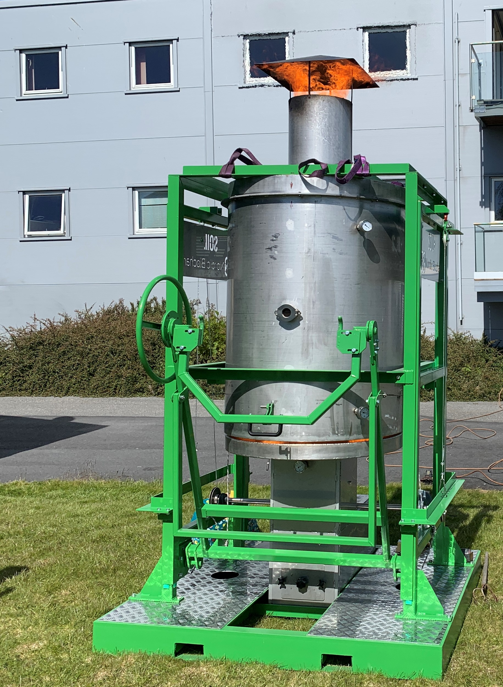
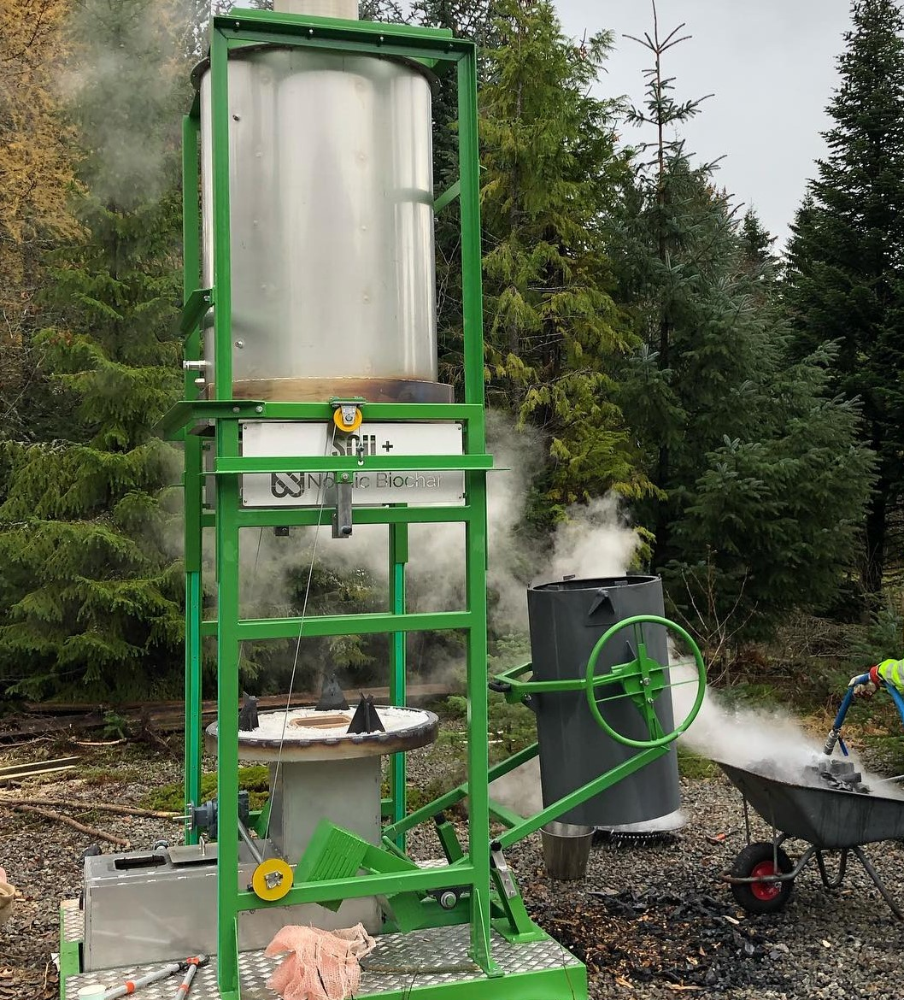
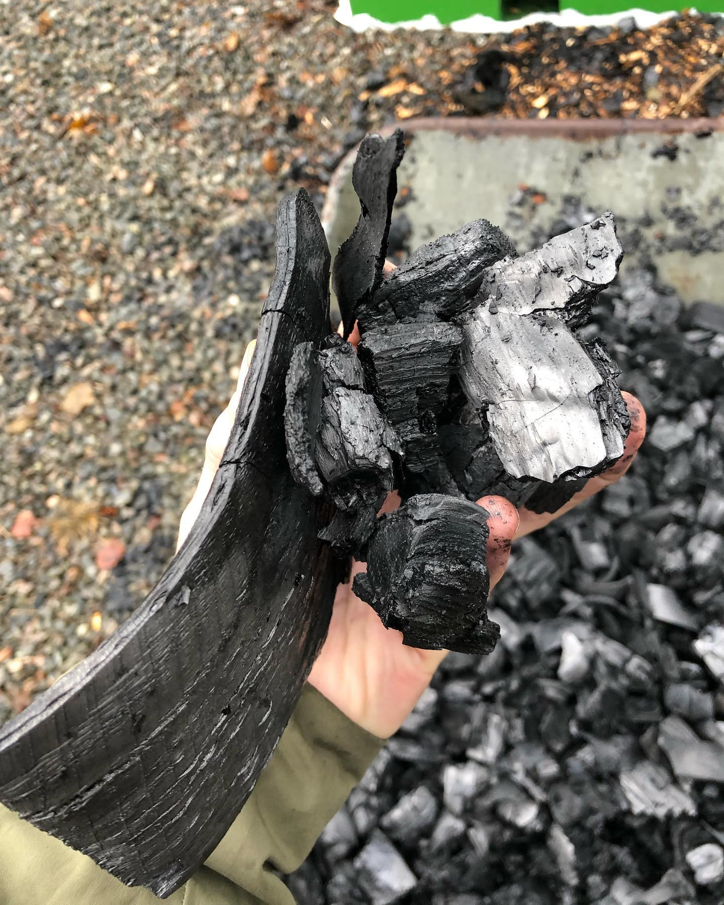

Biochar Reactor
I have desiged multiple biochar reactors, but most are company secrets. However, this small, manual Biochar furnace can be shared more openly. It converts wood to biochar through pyrolysis like this:
Put wood in the center bucket, fasten the lid, and push it into the reactor.

Start a separate fire below, heating the wood in the bucket without oxygen. As the wood gets hot it pyrolyses into wood gas and biochar. The wood gas is pressed out of the bucket and burns on the outside of the bucket, further driving the reaction.
Open the reactor and extract the bucket.
Remove the lid and pour the biochar out. No char is burnt, only the gases.
Carbon Capture
Biochar production is certified CO2-capture that can reverse global warming if done in larger scale.
Trees capture CO2 from the air, so in theory you could cut down trees and bury them underground to undo the extraction of fossil carbon. Trees however decompose in the ground and release harmful gases, so it must be converted to carbon first to make it 100% stable.
If we continously run 80 million of these reactors (combined with burying the carbon and replanting trees), we would put as much carbon into the earth as we are extracting, and the net CO2 emmissions in the world would be zero.
Other uses
Biochar from wood can also be used for soil improvement as it is very porous, and beneficial bacteria thrive in the pores.
Biochar can also replace fossil coal as a reducing agent in metal production etc as a non-fossile, zero-emmission alternative.